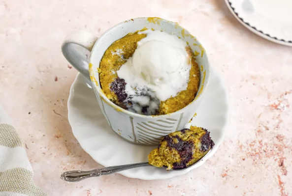

Banana Bread Chocolate Chunk Mug Cake

Description
Looking for a no-fuss banana bread recipe with your one overripe banana? Let this be your go-to dessert! The batter comes together quickly with just a fork and its cooked in less than 2 minutes in the microwave. The cake is fluffy, decadent, and filled with pools of melted chocolate chunks.
Ingredients
- 1 medium overripe banana
- 1 medium egg
- 1 tablespoon unsalted butter, melted
- 1/2 teaspoon vanilla extract
- 1 tablespoon sugar
- 1/4 cup (32g) all-purpose flour
- 1/4 teaspoon baking powder
- 1/4 teaspoon baking soda
- Pinch salt
- 1 ounce (30g) dark chocolate chunks
- Vanilla ice cream, for serving
Steps
- Mix all ingredients together in mug
- Microwave for 2 minutes
- Rest for 1 minute
- Enjoy
HOME